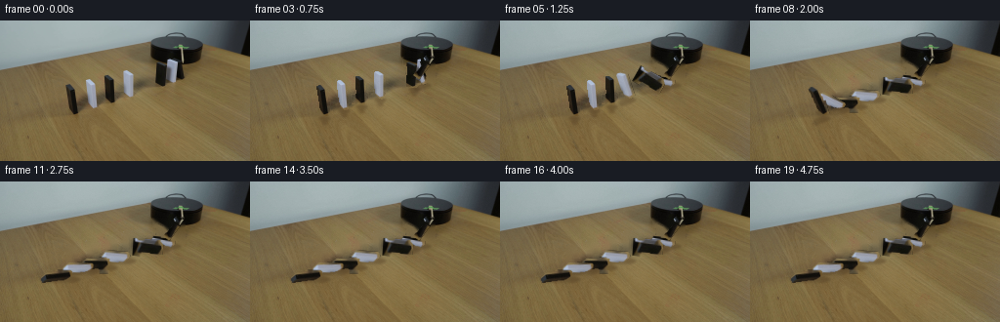
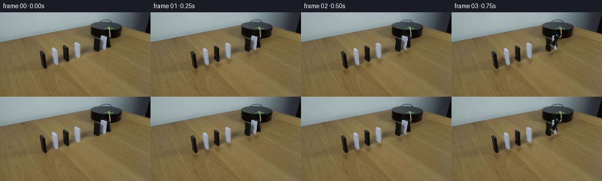
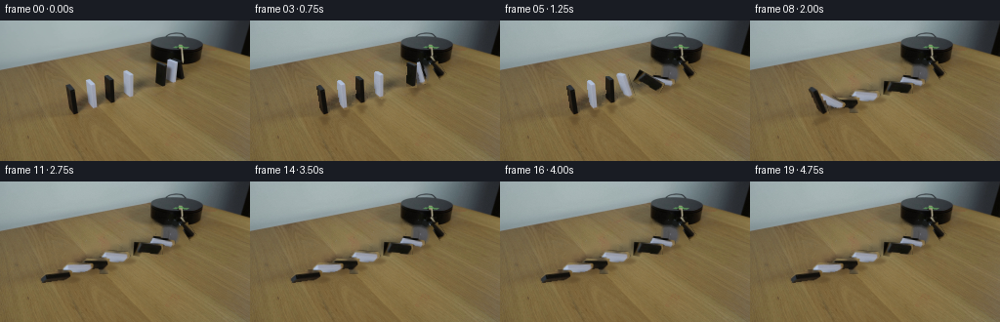
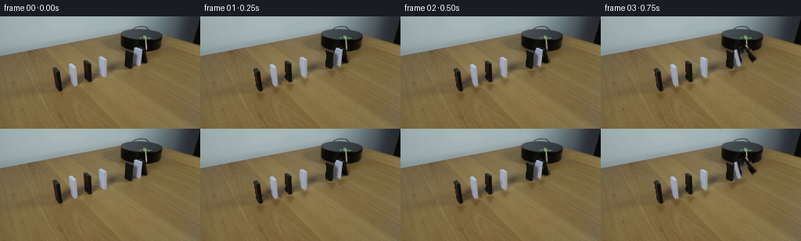

CODING AGENTS AS PIXEL WORLD MODELS
traex/DeepSeek-V4.1-Flash · 0049
点击播放 · 原生 RGB 像素
此结果可播放，但该运行尚未通过最终提交审核。页面展示不代表评测通过。
逐轮保存的候选
回放视频、检查图与代码变化。
每份候选均可单独播放。实际图片检查记录在下方工具轨迹中。
候选 01播放与检查图
点击播放 · 原生 RGB 像素


展开代码变化
--- 上一保存版本
+++ 本次保存版本
@@ -0,0 +1,217 @@
+from pathlib import Path
+
+import cv2
+import numpy as np
+from PIL import Image
+
+import artifact_io
+
+
+CASE_DIR = Path(__file__).resolve().parent
+WIDTH, HEIGHT = 256, 144
+N_FRAMES = 20
+FPS = 4
+
+
+def _largest_component(mask):
+ count, labels, stats, _ = cv2.connectedComponentsWithStats(mask.astype(np.uint8), 8)
+ if count <= 1:
+ return mask.astype(bool)
+ index = 1 + int(np.argmax(stats[1:, cv2.CC_STAT_AREA]))
+ return labels == index
+
+
+def _sprite_from_box(image, box, kind):
+ x0, y0, x1, y1 = box
+ crop = image[y0:y1, x0:x1]
+ r, g, b = crop[:, :, 0].astype(np.int16), crop[:, :, 1].astype(np.int16), crop[:, :, 2].astype(np.int16)
+ value = (r + g + b) / 3.0
+
+ if kind == "white":
+ mask = ((b > r + 2) & (g > r + 1) & (value > 78)) | (
+ (np.maximum.reduce([r, g, b]) - np.minimum.reduce([r, g, b]) < 42)
+ & (value > 104)
+ & (value < 232)
+ )
+ else:
+ mask = (np.maximum.reduce([r, g, b]) < 100) & (
+ np.maximum.reduce([r, g, b]) - np.minimum.reduce([r, g, b]) < 48
+ )
+
+ mask = _largest_component(mask)
+ mask = cv2.morphologyEx(mask.astype(np.uint8), cv2.MORPH_CLOSE, np.ones((2, 2), np.uint8))
+ mask = cv2.dilate(mask, np.ones((2, 2), np.uint8), iterations=1)
+
+ rgb = np.zeros((HEIGHT, WIDTH, 3), np.uint8)
+ alpha = np.zeros((HEIGHT, WIDTH), np.float32)
+ rgb[y0:y1, x0:x1] = crop
+ alpha[y0:y1, x0:x1] = mask.astype(np.float32)
+ alpha = cv2.GaussianBlur(alpha, (0, 0), 0.45)
+ alpha = np.clip((alpha - 0.10) / 0.90, 0.0, 1.0)
+ return rgb, alpha, mask
+
+
+def _build_scene():
+ source = np.asarray(Image.open(CASE_DIR / "first_frame.png").convert("RGB"), dtype=np.uint8)
+
+ boxes = [
+ (169, 38, 184, 66), # far white
+ (157, 38, 175, 69), # far black
+ (124, 48, 139, 81), # near white
+ (104, 53, 121, 88), # near black
+ (85, 57, 101, 92), # near white
+ (65, 62, 82, 100), # near black
+ ]
+ kinds = ["white", "black", "white", "black", "white", "black"]
+ bases = np.array(
+ [
+ [177.0, 64.0],
+ [166.0, 68.0],
+ [131.0, 79.0],
+ [112.0, 86.0],
+ [93.5, 90.0],
+ [74.0, 98.0],
+ ],
+ dtype=np.float32,
+ )
+
+ sprites = []
+ erase = np.zeros((HEIGHT, WIDTH), np.uint8)
+ for box, kind in zip(boxes, kinds):
+ rgb, alpha, _ = _sprite_from_box(source, box, kind)
+ sprites.append((rgb, alpha))
+ erase = np.maximum(erase, (alpha > 0.08).astype(np.uint8) * 255)
+
+ # The striker is the narrow dark piece descending from the platform.
+ stick_box = (179, 37, 189, 65)
+ stick_rgb, stick_alpha, _ = _sprite_from_box(source, stick_box, "black")
+ erase = np.maximum(erase, (stick_alpha > 0.08).astype(np.uint8) * 255)
+
+ # Remove contact shadows together with the movable pieces. They are rebuilt
+ # per frame so they follow the changing silhouettes.
+ for bx, by in bases:
+ cv2.ellipse(
+ erase,
+ (int(round(bx)), int(round(by))),
+ (9, 3),
+ 0,
+ 0,
+ 360,
+ 255,
+ -1,
+ )
+ erase = cv2.dilate(erase, np.ones((3, 3), np.uint8), iterations=1)
+ clean = cv2.inpaint(source, erase, 4, cv2.INPAINT_TELEA)
+
+ return source, clean, sprites, (stick_rgb, stick_alpha), bases
+
+
+def _smoothstep(value):
+ value = float(np.clip(value, 0.0, 1.0))
+ return value * value * (3.0 - 2.0 * value)
+
+
+def _fall_angle(t, start, duration, max_angle):
+ if t <= start:
+ return 0.0
+ progress = (t - start) / duration
+ if progress >= 1.0:
+ return max_angle
+ # Gravity-like acceleration, with a short easing shoulder at the start.
+ return max_angle * (0.18 * _smoothstep(progress) + 0.82 * progress ** 1.65)
+
+
+def _warp_sprite(rgb, alpha, base, angle):
+ matrix = cv2.getRotationMatrix2D((float(base[0]), float(base[1])), angle, 1.0)
+ warped_rgb = cv2.warpAffine(
+ rgb,
+ matrix,
+ (WIDTH, HEIGHT),
+ flags=cv2.INTER_LINEAR,
+ borderMode=cv2.BORDER_CONSTANT,
+ borderValue=(0, 0, 0),
+ )
+ warped_alpha = cv2.warpAffine(
+ alpha,
+ matrix,
+ (WIDTH, HEIGHT),
+ flags=cv2.INTER_LINEAR,
+ borderMode=cv2.BORDER_CONSTANT,
+ borderValue=0,
+ )
+ return warped_rgb, np.clip(warped_alpha, 0.0, 1.0)
+
+
+def _composite(image, rgb, alpha):
+ a = alpha[:, :, None]
+ return np.clip(image.astype(np.float32) * (1.0 - a) + rgb.astype(np.float32) * a, 0, 255).astype(np.uint8)
+
+
+def _draw_shadow(image, base, angle, height):
+ shadow = np.zeros((HEIGHT, WIDTH), np.float32)
+ radians = np.deg2rad(angle)
+ top = (
+ int(round(base[0] - np.sin(radians) * height + 2.0)),
+ int(round(base[1] + np.cos(radians) * height * 0.13 + 2.0)),
+ )
+ bottom = (int(round(base[0] + 2.0)), int(round(base[1] + 2.0)))
+ cv2.line(shadow, bottom, top, 0.28, 5, cv2.LINE_AA)
+ cv2.ellipse(shadow, bottom, (6, 2), 0, 0, 360, 0.34, -1, cv2.LINE_AA)
+ shadow = cv2.GaussianBlur(shadow, (0, 0), 1.15)
+ tint = np.empty_like(image)
+ tint[:] = (67, 49, 29)
+ return _composite(image, tint, np.clip(shadow, 0.0, 0.34))
+
+
+def generate_frames():
+ source, clean, sprites, stick, bases = _build_scene()
+ heights = np.array([24.0, 28.0, 28.0, 30.0, 30.0, 32.0], dtype=np.float32)
+ starts = np.array([0.50, 0.78, 1.02, 1.28, 1.52, 1.78], dtype=np.float32)
+ durations = np.array([0.62, 0.60, 0.62, 0.60, 0.62, 0.66], dtype=np.float32)
+ final_angles = np.array([84.0, 86.0, 85.0, 87.0, 86.0, 88.0], dtype=np.float32)
+
+ frames = np.empty((N_FRAMES, HEIGHT, WIDTH, 3), dtype=np.uint8)
+ frames[0] = source
+
+ for frame_index in range(1, N_FRAMES):
+ t = frame_index / FPS
+ image = clean.copy()
+
+ # Motion begins immediately, but the first contact happens after the
+ # striker has crossed the small clearance above the far domino.
+ stick_angle = -min(37.0, 13.0 * max(0.0, t - 0.02))
+ if t >= 0.54:
+ stick_angle = -37.0
+
+ for index, (rgb, alpha) in enumerate(sprites):
+ angle = _fall_angle(t, starts[index], durations[index], final_angles[index])
+ image = _draw_shadow(image, bases[index], angle, heights[index])
+ warped_rgb, warped_alpha = _warp_sprite(rgb, alpha, bases[index], angle)
+ image = _composite(image, warped_rgb, warped_alpha)
+
+ stick_rgb, stick_alpha = stick
+ warped_rgb, warped_alpha = _warp_sprite(
+ stick_rgb,
+ stick_alpha,
+ np.array([184.0, 38.0], dtype=np.float32),
+ stick_angle,
+ )
+ image = _composite(image, warped_rgb, warped_alpha)
+
+ # A restrained camera/sensor texture keeps the static plate from
+ # looking digitally frozen after the sprites begin moving.
+ rng = np.random.default_rng(1000 + frame_index)
+ grain = rng.normal(0.0, 0.55, (HEIGHT, WIDTH, 1)).astype(np.float32)
+ image = np.clip(image.astype(np.float32) + grain, 0, 255).astype(np.uint8)
+ frames[frame_index] = image
+
+ return frames
+
+
+def main():
+ frames = generate_frames()
+ artifact_io.save(frames, CASE_DIR)
+
+
+if __name__ == "__main__":
+ main()
候选 02播放与检查图
点击播放 · 原生 RGB 像素


展开代码变化
--- 上一保存版本
+++ 本次保存版本
@@ -56,7 +56,7 @@
boxes = [
(169, 38, 184, 66), # far white
- (157, 38, 175, 69), # far black
+ (157, 39, 171, 69), # far black
(124, 48, 139, 81), # near white
(104, 53, 121, 88), # near black
(85, 57, 101, 92), # near white
@@ -83,7 +83,7 @@
erase = np.maximum(erase, (alpha > 0.08).astype(np.uint8) * 255)
# The striker is the narrow dark piece descending from the platform.
- stick_box = (179, 37, 189, 65)
+ stick_box = (181, 37, 190, 64)
stick_rgb, stick_alpha, _ = _sprite_from_box(source, stick_box, "black")
erase = np.maximum(erase, (stick_alpha > 0.08).astype(np.uint8) * 255)
@@ -179,9 +179,9 @@
# Motion begins immediately, but the first contact happens after the
# striker has crossed the small clearance above the far domino.
- stick_angle = -min(37.0, 13.0 * max(0.0, t - 0.02))
+ stick_angle = min(34.0, 11.0 * max(0.0, t - 0.02))
if t >= 0.54:
- stick_angle = -37.0
+ stick_angle = 34.0
for index, (rgb, alpha) in enumerate(sprites):
angle = _fall_angle(t, starts[index], durations[index], final_angles[index])
@@ -193,7 +193,7 @@
warped_rgb, warped_alpha = _warp_sprite(
stick_rgb,
stick_alpha,
- np.array([184.0, 38.0], dtype=np.float32),
+ np.array([184.5, 39.0], dtype=np.float32),
stick_angle,
)
image = _composite(image, warped_rgb, warped_alpha)
可观测工具轨迹
实际执行的命令与返回图片。
命令 1exit 0
/bin/bash -c "pwd && rg --files -g '"'!**/.git/**'"' | sed -n '1,200p'"
命令 2exit 0
/bin/bash -c "sed -n '1,240p' prompt.txt"
命令 3exit 0
/bin/bash -c "sed -n '1,280p' GENERATION_RULES.md"
命令 4exit 127
/bin/bash -c "file first_frame.png && identify -verbose first_frame.png | sed -n '1,120p'"
命令 5exit 0
/bin/bash -c "sed -n '1,260p' artifact_io.py"
命令 6exit 0
/bin/bash -c "sed -n '1,260p' player_template.html"
命令 7exit 0
/bin/bash -c "python3 - <<'PY'
from PIL import Image
import numpy as np
im=np.array(Image.open('first_frame.png').convert('RGB'))
print(im.shape, im.dtype)
print('unique',len(np.unique(im.reshape(-1,3),axis=0)))
# dominant colors
u,c=np.unique(im.reshape(-1,3),axis=0,return_counts=True)
for i in np.argsort(c)[-30:][::-1]: print(tuple(u[i]), int(c[i]))
# coarse ascii brightness/color classes
for y in range(0,144,4):
row=''
for x in range(0,256,4):
p=im[y:y+4,x:x+4].mean((0,1))
if p.mean()<40: ch=' '
elif p.mean()<85: ch='.'
elif p.mean()<130: ch=':'
elif p.mean()<175: ch='o'
elif p.mean()<215: ch='O'
else: ch='#'
row+=ch
print(f'{y:03d} {row}')
PY"命令 8exit 0
/bin/bash -c "python3 - <<'PY'
try:
import cv2; print('cv2',cv2.__version__)
except Exception as e: print('no cv2',e)
try:
import scipy; print('scipy',scipy.__version__)
except Exception as e: print('no scipy',e)
try:
import skimage; print('skimage',skimage.__version__)
except Exception as e: print('no skimage',e)
PY"命令 9exit 0
/bin/bash -c "python3 - <<'PY'
from PIL import Image
import numpy as np
im=np.array(Image.open('first_frame.png').convert('RGB'))
# print representative color each 8x8 block (avg) and variance-based chars
for y in range(0,144,3):
row=''
for x in range(0,256,3):
p=im[y:y+3,x:x+3].astype(float)
m=p.mean((0,1)); sd=p.std()
lum=.2126*m[0]+.7152*m[1]+.0722*m[2]
# classes: sky/bg light blue gray, board neutral dark, brown table
if lum<25: ch=' '
elif lum<55: ch='.'
elif lum<90: ch=':'
elif lum<125: ch='-'
elif lum<160: ch='='
elif lum<195: ch='+'
elif lum<225: ch='*'
else: ch='#'
row+=ch
print(f'{y:03d} {row}')
PY"命令 10exit 0
/bin/bash -c "python3 - <<'PY'
from PIL import Image
import numpy as np
im=np.array(Image.open('first_frame.png').convert('RGB')).astype(float)
# sample quantized color letters, 2x2 average
# classes by hue/lum: K dark, W bright neutral, B brown, G gray-blue bg, y tan
for y in range(0,144,2):
row=''
for x in range(0,256,2):
r,g,b=im[y:y+2,x:x+2].mean((0,1)); lum=.2126*r+.7152*g+.0722*b
if lum<30: c=' '
elif lum<65: c='.'
elif lum<100: c=':'
elif lum<135: c='-'
elif lum<170: c='='
elif lum<205: c='+'
elif lum<235: c='*'
else: c='#'
row+=c
print(row)
PY"命令 11exit 0
/bin/bash -c "python3 - <<'PY'
from PIL import Image
import numpy as np
from scipy.cluster.vq import kmeans2
im=np.array(Image.open('first_frame.png').convert('RGB'))
a=im.reshape(-1,3).astype(float)
cent,lab=kmeans2(a,12,minit='++',seed=4)
counts=np.bincount(lab,minlength=12)
for i in np.argsort(counts)[::-1]:
ys,xs=np.where(lab.reshape(144,256)==i)
print(i,counts[i],'cent',cent[i].round(1),'bbox',xs.min(),ys.min(),xs.max(),ys.max())
PY"命令 12exit 0
/bin/bash -c "python3 - <<'PY'
from PIL import Image
import numpy as np, cv2
im=np.array(Image.open('first_frame.png').convert('RGB'))
r,g,b=[im[:,:,i] for i in range(3)]
masks={
'black':(r<70)&(g<70)&(b<70),
'darkgray':(r<90)&(g<95)&(b<100),
'white':(r>135)&(g>135)&(b>135)&((np.maximum.reduce([r,g,b]).astype(int)-np.minimum.reduce([r,g,b]))<35),
'bluegray':(b>g-5)&(g>r+5)&(r>100),
'brown':(r>g+10)&(g>b+20)&(r<180),
}
for name,m in masks.items():
n,lab,stats,cents=cv2.connectedComponentsWithStats(m.astype(np.uint8),8)
print('\\n',name,'count',m.sum())
for i in np.argsort(stats[1:,4])[-20:][::-1]+1:
x,y,w,h,a=stats[i];
if a>=8: print(f' area {a:4d} bbox {x:3d},{y:3d} {w:2d}x{h:2d} cent {cents[i,0]:.1f},{cents[i,1]:.1f}')
PY"命令 13exit 0
/bin/bash -c "python3 - <<'PY'
from PIL import Image
import numpy as np
im=np.array(Image.open('first_frame.png').convert('RGB'))
# print pixels in crop x60-150 y35-105 as RGB symbols based on nearest prototype
protos=np.array([[165,180,181],[130,110,70],[110,95,60],[45,46,48],[20,18,14],[145,160,163],[80,88,90],[190,195,190],[145,120,75]])
chars='ABCDEFGHI'
a=im.astype(float)
d=((a[:,:,None,:]-protos[None,None,:,:])**2).sum(-1)
lab=d.argmin(-1)
for y in range(35,105,2):
row=''
for x in range(55,155,2):
c=chars[lab[y,x]]
# white highlights within dark object as w
if im[y,x].mean()>120 and im[y,x].max()-im[y,x].min()<30: c='w'
row+=c
print(f'{y:03d} {row}')
print('proto:', list(zip(chars,protos.tolist())))
PY"命令 14exit 0
/bin/bash -c "python3 - <<'PY'
from PIL import Image
import numpy as np
im=np.array(Image.open('first_frame.png').convert('RGB'))
# enlarge crop for local visual inspection only via numerical nearest neighbor
Image.fromarray(im[20:110,55:225]).resize((680,360),Image.Resampling.NEAREST).save('.tmp/geometry_zoom.png')
# segment dark/white domino areas in crop and print extents by row
for y in range(35,106):
mask=(im[y].mean(-1)<80)
xs=np.where(mask)[0]
# runs
if len(xs):
runs=[]; s=xs[0]; prev=xs[0]
for x in xs[1:]:
if x>prev+1: runs.append((s,prev)); s=x
prev=x
runs.append((s,prev))
rr=[r for r in runs if r[1]-r[0]>=2]
if rr: print(y,rr)
PY"命令 15exit 0
/bin/bash -c "python3 - <<'PY'
from PIL import Image
import numpy as np, cv2
im=np.array(Image.open('first_frame.png').convert('RGB'))
# image to terminal half block 4x4 avg maybe colors classified semantic
for y in range(0,144,4):
row=''
for x in range(0,256,4):
p=im[y:y+4,x:x+4].mean((0,1)); r,g,b=p
if max(p)<75: c='K'
elif r>g+12 and g>b+12: c='b'
elif b>r+8 and g>r+5 and r>100: c='S'
elif p.mean()>135 and max(p)-min(p)<35: c='W'
elif max(p)-min(p)<18: c='g'
else: c='.'
row+=c
print(row)
PY"命令 16exit 0
/bin/bash -c "python3 - <<'PY'
from PIL import Image
import numpy as np
im=np.array(Image.open('first_frame.png').convert('RGB'))
# average RGB over selected regions
for name,(x0,y0,x1,y1) in {
'sky':(0,0,100,30),'upper_bg_right':(240,0,256,30),'table_top':(200,40,250,60),'table_mid':(200,100,250,130),'table_low':(0,120,100,143),
'black_platform':(165,35,195,55),'black_dom':(160,65,171,90),'white_dom':(126,52,135,79),'stick':(70,65,78,95),'stick2':(109,56,117,83),
'gap':(140,75,150,90),'bg_left':(0,0,10,10),'bg_center':(100,10,130,20), 'right_dark':(245,10,255,30)
}.items():
p=im[y0:y1,x0:x1].reshape(-1,3); print(name, p.mean(0).round(1), 'std',p.std(0).round(1), 'range',p.min(0),p.max(0))
PY"命令 17exit 0
/bin/bash -c "python3 - <<'PY'
from PIL import Image
import numpy as np
im=np.array(Image.open('first_frame.png').convert('RGB')).astype(int)
# every 1 pixel map over target crop, classes based on color and brightness
for y in range(0,108):
row=''
for x in range(45,221):
r,g,b=im[y,x]
lum=(r+g+b)/3
# semantic class
if max(r,g,b)<38: c='#' # black
elif max(r,g,b)<75 and max(r,g,b)-min(r,g,b)<22: c='K' # dark neutral
elif b>r+7 and g>r+4 and lum>105: c=' ' # background light blue
elif r>g+9 and g>b+14: c='.' # table brown
elif lum>125 and max(r,g,b)-min(r,g,b)<40: c='W' # white-ish
elif max(r,g,b)-min(r,g,b)<22: c='g' # neutral mid
else: c='?'
row+=c
print(f'{y:03d} {row}')
PY"命令 18exit 0
/bin/bash -c "python3 - <<'PY'
from PIL import Image
import numpy as np
im=np.array(Image.open('first_frame.png').convert('RGB')).astype(float)
# find local gradients / edges to infer polygon corners of platform
import cv2
g=cv2.cvtColor(im.astype(np.uint8),cv2.COLOR_RGB2GRAY)
e=cv2.Canny(g,25,70)
lines=cv2.HoughLinesP(e,1,np.pi/180,threshold=18,minLineLength=12,maxLineGap=3)
for line in lines[:80]:
x1,y1,x2,y2=line[0]
if (x1<210 and y1>15): print((x1,y1,x2,y2), 'slope',round((y2-y1)/(x2-x1+1e-9),2))
PY"命令 19exit 0
/bin/bash -c "python3 - <<'PY'
from PIL import Image
import numpy as np
im=np.array(Image.open('first_frame.png').convert('RGB'))
# crop print RGB runs by columns with dark threshold to find objects
for x in [64,68,72,76,80,88,92,96,100,104,108,112,116,120,124,128,132,136,140,144,148,152,156,160,164,168,172,176,180,184,188,192,196,200]:
ys=np.where(im[:,x].mean(-1)<90)[0]
runs=[]
if len(ys):
s=prev=ys[0]
for y in ys[1:]:
if y>prev+1: runs.append((s,prev));s=y
prev=y
runs.append((s,prev))
runs=[r for r in runs if r[1]-r[0]>=2]
print(x,runs)
PY"命令 20exit 0
/bin/bash -c "python3 - <<'PY'
from PIL import Image
import numpy as np
im=np.array(Image.open('first_frame.png').convert('RGB'))
# classify black-ish components in crop excluding platform using HSV and connected comps, print centroids
import cv2
hsv=cv2.cvtColor(im,cv2.COLOR_RGB2HSV)
for desc,m in [
('verydark',(im.max(-1)<65)),
('darkneutral',(im.max(-1)<95)&((im.max(-1).astype(int)-im.min(-1))<25)),
('bluewhite',(im[:,:,2]>im[:,:,0]+10)&(im.mean(-1)>100)),
('darkwhite',(im.mean(-1)>100)&(im.std(-1)<20))
]:
m=m.copy(); m[:50]=0; m[:, :50]=0
n,lab,stats,cents=cv2.connectedComponentsWithStats(m.astype(np.uint8),8)
print('\\n',desc)
for i in np.argsort(stats[1:,4])[-30:][::-1]+1:
x,y,w,h,a=stats[i]
if a>5: print(f'{a:4d} {x},{y} {w}x{h} c={cents[i,0]:.1f},{cents[i,1]:.1f}')
PY"命令 21exit 0
/bin/bash -c "python3 - <<'PY'
from PIL import Image
import numpy as np
im=np.array(Image.open('first_frame.png').convert('RGB'))
# print crop pixels with exact-ish coarse codes: D black, L white, T brown, B bluegray, G gray
protos=np.array([[18,18,15],[55,55,55],[125,105,65],[160,176,178],[140,120,80],[150,155,160],[105,115,115]])
chars='dDTBWG'
a=im.astype(int)
d=((a[:,:,None,:]-protos)**2).sum(-1); lab=d.argmin(-1)
for y in range(40,104):
row=''
for x in range(55,201):
r,g,b=im[y,x]
# forced classification
if max(r,g,b)<45: c='#'
elif max(r,g,b)<80 and max(r,g,b)-min(r,g,b)<25: c='K'
elif r>g+10 and g>b+10: c='.'
elif b>r+8 and r>100: c=' '
elif r>g+8: c='b'
elif max(r,g,b)-min(r,g,b)<25 and r>100: c='W'
else: c='?'
row+=c
print(f'{y:03d} {row}')
PY"命令 22exit 0
/bin/bash -c "python3 - <<'PY'
from PIL import Image
import numpy as np
im=np.array(Image.open('first_frame.png').convert('RGB'))
# print x,y rgb at key points and save sampled patches?
pts=[(0,0),(100,0),(200,0),(240,20),(100,30),(50,40),(10,50),(200,50),(60,65),(73,80),(111,70),(132,64),(177,56),(165,57),(155,35),(180,35),(200,30),(220,50),(180,50),(190,55),(140,65),(140,80),(100,90),(250,130)]
for x,y in pts: print((x,y),im[y,x])
PY"命令 23exit 0
/bin/bash -c "python3 - <<'PY'
from PIL import Image
import numpy as np
im=np.array(Image.open('first_frame.png').convert('RGB'))
# Show exact color patterns in likely object crops, with run-length per row for color category
# categories: K black (<70), D dark gray (70-110 neutral), W light neutral (>110 neutral), B bluegray, T table
for region,name in [((64,54,122,102),'left'),((124,48,145,85),'middle'),((155,35,190,72),'platformstick'),((150,30,212,66),'platform'),((170,46,188,70),'white_dom')]:
x0,y0,x1,y1=region
print('\\n--',name)
for y in range(y0,y1):
row=''
for x in range(x0,x1):
r,g,b=im[y,x]
if max(r,g,b)<65: c='#'
elif max(r,g,b)<100 and max(r,g,b)-min(r,g,b)<25: c='K'
elif r>g+10 and g>b+8: c='.'
elif b>r+8 and g>r+2: c='S'
elif max(r,g,b)-min(r,g,b)<35 and r>110: c='W'
else: c='?'
row+=c
print(f'{y:03d} {row}')
PY"命令 24exit 0
/bin/bash -c "python3 - <<'PY'
from PIL import Image
import numpy as np
im=np.array(Image.open('first_frame.png').convert('RGB')).astype(int)
# coarse labels each pixel around platform, column every 2 and rows every 1
chars=' .:-=+*#%@'
for y in range(10,75):
row=''
for x in range(135,215,2):
r,g,b=im[y,x]; lum=.2126*r+.7152*g+.0722*b
if b>r+10 and g>r+4 and lum>80: c='S'
elif r>g+12 and g>b+12: c='b'
elif lum<10:c='@'
elif lum<30:c='#'
elif lum<55:c='%'
elif lum<80:c='*'
elif lum<105:c='+'
elif lum<130:c='='
elif lum<155:c='-'
elif lum<180:c=':'
elif lum<205:c='.'
else:c=' '
row+=c
print(f'{y:03d} {row}')
PY"命令 25exit 0
/bin/bash -c "python3 - <<'PY'
from PIL import Image
import numpy as np, cv2
im=np.array(Image.open('first_frame.png').convert('RGB'))
mask=im.max(-1)<75
for name,(x0,y0,x1,y1) in {'b1':(60,62,84,101),'w1':(82,55,104,94),'b2':(101,52,123,89),'w2':(121,46,142,83),'far':(150,35,185,72)}.items():
print('\\n',name)
for y in range(y0,y1):
row=''
for x in range(x0,x1):
row += '#' if mask[y,x] else '.'
if '#' in row: print(f'{y:03d} {row}')
PY"命令 26exit 0
/bin/bash -c "python3 - <<'PY'
from PIL import Image
import numpy as np
im=np.array(Image.open('first_frame.png').convert('RGB')).astype(int)
# look at luminance/color transition at each row to identify object polygon by leftmost non-brown in x150-210
for y in range(20,75):
vals=[]
for x in range(145,215):
r,g,b=im[y,x]
if r>g+10 and g>b+8: typ='T'
elif max(r,g,b)<75: typ='K'
elif b>r+8: typ='S'
elif max(r,g,b)-min(r,g,b)<25: typ='G'
else: typ='?'
vals.append(typ)
# runs
runs=[]; s=0; prev=vals[0]
for i,v in enumerate(vals[1:],1):
if v"'!=prev: runs.append((145+s,145+i-1,prev)); s=i;prev=v
runs.append((145+s,214,prev))
print(y,runs)
PY'命令 27exit 0
/bin/bash -c "python3 - <<'PY'
from PIL import Image
import numpy as np, cv2
im=np.array(Image.open('first_frame.png').convert('RGB')).astype(np.uint8)
# estimate table texture periodicity and rows, print horizontal average RGB per y
for y in range(0,144,4): print(y, im[y].mean(0).round(1))
# edge texture periodic FFT
x=cv2.cvtColor(im,cv2.COLOR_RGB2GRAY)[80:140].mean(0)
f=np.abs(np.fft.rfft(x-x.mean())); print('peaks',np.argsort(f[2:])[-10:]+2)
PY"命令 28exit 1
/bin/bash -c "python3 - <<'PY'
from PIL import Image
import numpy as np, cv2
im=np.array(Image.open('first_frame.png').convert('RGB')).astype(np.uint8)
# detect line edges in background only and tabletop. Print edge maps as ascii coarse
g=cv2.cvtColor(im,cv2.COLOR_RGB2GRAY)
for y in range(0,144,2):
row=''
for x in range(0,256,2):
val=g[y:y+2,x:x+2].mean()
# edges gradient
gx=abs(g[y:y+2,x:x+2].astype(int)-g[y:y+2,max(0,x-2):x].astype(int)).mean()
gy=abs(g[y:y+2,x:x+2].astype(int)-g[max(0,y-2):y,x:x+2].astype(int)).mean()
if gx+gy>15: c='#'
elif gx+gy>8:c='+'
elif gx+gy>4:c='.'
else:c=' '
row+=c
print(row)
PY"命令 29exit 0
/bin/bash -c "python3 - <<'PY'
from PIL import Image
import numpy as np, cv2
im=np.array(Image.open('first_frame.png').convert('RGB')).astype(np.uint8)
g=cv2.cvtColor(im,cv2.COLOR_RGB2GRAY)
gx=np.zeros_like(g); gy=np.zeros_like(g)
gx[:,2:]=np.abs(g[:,2:].astype(int)-g[:,:-2].astype(int)); gy[2:]=np.abs(g[2:].astype(int)-g[:-2].astype(int))
for y in range(0,144,2):
row=''
for x in range(0,256,2):
v=gx[y:y+2,x:x+2].mean()+gy[y:y+2,x:x+2].mean()
if v>18:c='#'
elif v>8:c='+'
elif v>4:c='.'
else:c=' '
row+=c
print(row)
PY"命令 30exit 0
/bin/bash -c "python3 - <<'PY'
from PIL import Image
import numpy as np, cv2
im=np.array(Image.open('first_frame.png').convert('RGB')).astype(np.int16)
r,g,b=im.transpose(2,0,1)
# masks
masks={
'table':(r>g+7)&(g>b+12),
'bluebg':(b>r+5)&(g>r+3)&((r+g+b)/3>85),
'dark':(r+g+b<210),
'neutral_light':(r+g+b>330)&(np.maximum.reduce([r,g,b])-np.minimum.reduce([r,g,b])<45),
'blackish':(np.maximum.reduce([r,g,b])<85),
'brownish':(r>g+10)&(g>b+10),
}
for name,m in masks.items():
n,lab,stats,cents=cv2.connectedComponentsWithStats(m.astype(np.uint8),8)
print('\\n'+name,'total',m.sum(),'components',n-1)
for i in np.argsort(stats[1:,4])[-15:][::-1]+1:
x,y,w,h,a=stats[i]
if a>=15: print(f' area={a:5d} bbox=({x},{y},{w},{h}) cent=({cents[i,0]:.1f},{cents[i,1]:.1f})')
PY"命令 31exit 0
/bin/bash -c "python3 - <<'PY'
from PIL import Image
import numpy as np, cv2
im=np.array(Image.open('first_frame.png').convert('RGB')).astype(np.int16)
r,g,b=im.transpose(2,0,1)
m=((b>r+4)&(g>r+2)&((r+g+b)/3>85)).astype(np.uint8)
# skeleton or contours for 3 white dominoes
n,lab,stats,cents=cv2.connectedComponentsWithStats(m,8)
for i in range(1,n):
x,y,w,h,a=stats[i]
if a>50 and x>50:
print('\\ncomp',i,'bbox',x,y,w,h,'area',a)
sub=(lab[y:y+h,x:x+w]==i)
for yy in range(h):
xs=np.where(sub[yy])[0]
if len(xs): print(f'{y+yy:03d}: {x+xs.min()}..{x+xs.max()} center {(x+xs.min()+x+xs.max())/2:.1f} n{len(xs)}')
PY"命令 32exit 0
/bin/bash -c "python3 - <<'PY'
from PIL import Image
import numpy as np
im=np.array(Image.open('first_frame.png').convert('RGB')).astype(np.int16)
# print black b1 horizontal spans from max<85, and b2 spans
for name,(x0,x1) in {'b1':(62,90),'b2':(100,125)}.items():
print(name)
for y in range(50,100):
xs=np.where(im[y,x0:x1].max(-1)<85)[0]
if len(xs): print(y,x0+xs.min(),x0+xs.max(),len(xs))
PY"命令 33exit 0
/bin/bash -c "python3 - <<'PY'
from PIL import Image
import numpy as np
im=np.array(Image.open('first_frame.png').convert('RGB')).astype(int)
# show labels per column around black components to identify all dominoes
# detect dark object boundaries via per row runs over x 55:200
for y in range(45,105):
mask=im[y].max(-1)<80
xs=np.where(mask)[0]; runs=[]
if len(xs):
s=p=xs[0]
for x in xs[1:]:
if x>p+1: runs.append((s,p));s=x
p=x
runs.append((s,p))
runs=[(a,b) for a,b in runs if b-a>=1 and a>=50]
if runs: print(y,runs)
PY"命令 34exit 0
/bin/bash -c "python3 - <<'PY'
from PIL import Image
import numpy as np
im=np.array(Image.open('first_frame.png').convert('RGB')).astype(np.int16)
# vertical positions and widths of dark/light object components by color separation
r,g,b=im.transpose(2,0,1)
# at y=75 print rgb in x 60-125
for y in [60,70,80,90]:
print('Y',y)
for x in range(60,125,4):
print(x,tuple(im[y,x]),end='; ')
print()
PY"命令 35exit 0
/bin/bash -c "python3 - <<'PY'
from PIL import Image
import numpy as np
im=np.array(Image.open('first_frame.png').convert('RGB')).astype(float)
# find shadow vs base by comparing table model: fit RGB from rows 100+ as function x maybe low variation
# print a/b vertical distributions of luminance in x regions excluding objects
for name,(x0,x1) in {'left':(0,60),'mid':(200,250),'bottom':(50,150)}.items():
print(name)
for y in range(0,144,8):
p=im[y:y+8,x0:x1]
print(y,p.mean((0,1)).round(1), 'minmax',p.mean(-1).min().round(1),p.mean(-1).max().round(1))
PY"命令 36exit 0
/bin/bash -c "python3 - <<'PY'
from PIL import Image
import numpy as np
im=np.array(Image.open('first_frame.png').convert('RGB')).astype(float)
# test coordinates of white top ends and dark bottoms to infer domino geometry
# list connected comps for light region after y50
import cv2
r,g,b=im.transpose(2,0,1)
m=((r+g+b>320)&(np.maximum.reduce([r,g,b])-np.minimum.reduce([r,g,b])<55)&(np.indices(r.shape)[0]>45)).astype(np.uint8)
n,lab,stats,cents=cv2.connectedComponentsWithStats(m,8)
for i in range(1,n):
x,y,w,h,a=stats[i]
if a>30:
print(i,x,y,w,h,a,cents[i])
# PCA orientation
ys,xs=np.where(lab==i); pts=np.stack([xs,ys],1); cov=np.cov(pts.T); ww,vv=np.linalg.eigh(cov); print(' eig',ww,'vec',vv[:,-1])
PY"命令 37exit 0
/bin/bash -c "python3 - <<'PY'
from PIL import Image
import numpy as np
im=np.array(Image.open('first_frame.png').convert('RGB')).astype(int)
# approximate base and top of 4 dominoes by manually segmenting local dark/white
for name,(x0,x1) in {'d1':(64,84),'d2':(85,103),'d3':(103,121),'d4':(124,140)}.items():
print(name)
for y in range(45,100):
sub=im[y,x0:x1]
# object = not table: neutral or dark
r,g,b=sub.T
m=(np.abs(r-g)<30)&(np.abs(g-b)<35)&((r+g+b)/3<185)
xs=np.where(m)[0]
if len(xs)>2:
print(y,x0+xs.min(),x0+xs.max(), 'rgbmid',tuple(im[y,x0+int((xs.min()+xs.max())/2)]))
PY"命令 38exit 0
/bin/bash -c "python3 - <<'PY'
from PIL import Image
import numpy as np
im=np.array(Image.open('first_frame.png').convert('RGB')).astype(int)
# global palette around table only and clusters
from scipy.cluster.vq import kmeans2
for name,box in {'table':(0,90,256,144),'objects':(50,35,210,100),'sky':(0,0,220,35)}.items():
x0,y0,x1,y1=box;a=im[y0:y1,x0:x1].reshape(-1,3).astype(float)
c,l=kmeans2(a,8,minit='++',seed=10);cnt=np.bincount(l,minlength=8)
print(name)
for i in np.argsort(cnt)[::-1]: print(cnt[i],c[i].round(1))
PY"命令 39exit 0
/bin/bash -c "python3 - <<'PY'
from PIL import Image
import numpy as np
im=np.array(Image.open('first_frame.png').convert('RGB')).astype(int)
# Estimate tabletop boundary by largest brown region, print boundary y for x every 8
r,g,b=im.transpose(2,0,1); m=(r>g+7)&(g>b+10)
for x in range(0,256,8):
ys=np.where(m[:,x])[0]
if len(ys): print(x,ys.min(),ys.max())
PY"命令 40exit 0
/bin/bash -c "python3 - <<'PY'
from PIL import Image
import numpy as np
im=np.array(Image.open('first_frame.png').convert('RGB')).astype(int)
# top boundary of table brown, including mixed brown/neutral: per x find first y satisfying r>g+7 g>b+10; print selected y pixels
for x in [0,16,32,48,64,80,96,112,128,144,152,160,168,176,184,192,200,208,216,224,240,255]:
ys=np.where((im[:,x,0]>im[:,x,1]+7)&(im[:,x,1]>im[:,x,2]+10))[0]
y=ys.min() if len(ys) else -1
print(x,y, im[y,x] if y>=0 else None)
PY"命令 41exit 0
/bin/bash -c "python3 - <<'PY'
from PIL import Image
import numpy as np
im=np.array(Image.open('first_frame.png').convert('RGB')).astype(float)
# sample rows and columns for texture noise correlation/range, display residual of table around model plane
for box in [(0,100,256,144),(0,80,256,100),(200,50,256,80)]:
x0,y0,x1,y1=box;a=im[y0:y1,x0:x1]
print(box,'mean',a.mean((0,1)),'std',a.std((0,1)),'p10p90',np.percentile(a.reshape(-1,3), [10,90],axis=0))
# inspect high-level table pattern via residual after gaussian
import cv2
blur=cv2.GaussianBlur(im.astype(np.uint8),(0,0),3)
res=im-blur
print('noise std',res.std((0,1)), 'range',res.min(),res.max())
PY"命令 42exit 0
/bin/bash -c "python3 - <<'PY'
from PIL import Image
import numpy as np
im=np.array(Image.open('first_frame.png').convert('RGB')).astype(int)
# map region x128..168 y42..76; chars based on nearest prototypes
protos=np.array([[128,108,68],[165,177,181],[20,18,14],[55,55,57],[145,154,170],[100,90,60],[175,188,210],[80,70,50]])
chars='TBKDWtbw'
a=im
for y in range(42,77):
row=''
for x in range(128,169):
p=im[y,x]
d=((protos-p)**2).sum(1); c=chars[d.argmin()]
row+=c
print(f'{y:03d} {row}')
PY"命令 43exit 0
/bin/bash -c "python3 - <<'PY'
from PIL import Image
import numpy as np
im=np.array(Image.open('first_frame.png').convert('RGB')).astype(int)
# Horizontal runs of black within platform rows, all exact boundary extents
for y in range(12,69):
m=im[y].max(-1)<80
xs=np.where(m)[0]
if len(xs): print(y,xs.min(),xs.max())
PY"命令 44exit 0
/bin/bash -c "python3 - <<'PY'
from PIL import Image
import numpy as np
im=np.array(Image.open('first_frame.png').convert('RGB')).astype(int)
# print all local connected components for color-neutral/dark in crop, with min/max y and x, allowing nearby split
import cv2
for desc,m in [('neutral',(np.abs(im[:,:,0]-im[:,:,1])<20)&(np.abs(im[:,:,1]-im[:,:,2])<25)&(im.mean(-1)<185)&(im.mean(-1)>20)),('dark',im.max(-1)<100),('light',(im.mean(-1)>135)&(np.abs(im[:,:,0]-im[:,:,1])<25)&(np.abs(im[:,:,1]-im[:,:,2])<25))]:
m=m.astype(np.uint8); m[:30]=0;m[:, :50]=0;m[:,140:]=0
n,l,s,c=cv2.connectedComponentsWithStats(m,8)
print(desc)
for i in np.argsort(s[1:,4])[-20:][::-1]+1:
x,y,w,h,a=s[i]
if a>10: print(a,(x,y,w,h),c[i].round(1))
PY"命令 45exit 0
/bin/bash -c "python3 - <<'PY'
from PIL import Image
import numpy as np
im=np.array(Image.open('first_frame.png').convert('RGB')).astype(int)
# list specific dark component points and RGB stats to infer shadows vs domino
for name,(x0,y0,x1,y1) in {'b1':(65,64,92,98),'b2':(99,54,122,86),'b3':(159,45,174,70)}.items():
a=im[y0:y1,x0:x1]
mask=(a.max(-1)<100)
print(name)
for y in range(y0,y1):
xs=np.where(im[y,x0:x1].max(-1)<100)[0]
if len(xs): print(y,x0+xs.min(),x0+xs.max(), 'avg', im[y,x0+xs.min():x0+xs.max()+1].mean(0).round(1))
PY"命令 46exit 0
/bin/bash -c "python3 - <<'PY'
from PIL import Image
import numpy as np
im=np.array(Image.open('first_frame.png').convert('RGB')).astype(int)
# sample patches dark top and white domino to get vertical gradient
for x in [75,94,112,131,177]:
print('x',x)
for y in range(45,95,5):
print(y,tuple(im[y,x]),end='; ')
print()
PY"命令 47exit 0
/bin/bash -c "python3 - <<'PY'
from PIL import Image
import numpy as np, cv2
im=np.array(Image.open('first_frame.png').convert('RGB'))
r,g,b=[im[:,:,i].astype(int) for i in range(3)]
for name,box in {'d1':(63,62,83,99),'d2':(82,57,106,92),'d3':(101,52,125,88),'d4':(121,47,143,82),'d5':(156,42,176,69),'d6':(168,37,190,66)}.items():
x0,y0,x1,y1=box
table=(r>g+6)&(g>b+8)&(r>55)
dark=(r+g+b<300)
light=((b>r+3)&((r+g+b)/3>95))|((np.maximum.reduce([r,g,b])-np.minimum.reduce([r,g,b])<28)&((r+g+b)/3>115))
m=(dark|light)&~table
roi=m[y0:y1,x0:x1]
n,l,s,c=cv2.connectedComponentsWithStats(roi.astype(np.uint8),8)
print('\\n',name,box,'components')
for i in np.argsort(s[1:,4])[-5:][::-1]+1: print(i,s[i],c[i])
# print binary largest comp
if n>1:
i=np.argmax(s[1:,4])+1
for yy in range(roi.shape[0]):
row=''.join('#' if l[yy,xx]==i else '.' for xx in range(roi.shape[1]))
if '#' in row: print(f'{y0+yy:03d} {row}')
PY"命令 48exit 0
/bin/bash -c "python3 - <<'PY'
from PIL import Image
import numpy as np
im=np.array(Image.open('first_frame.png').convert('RGB')).astype(int)
# compare rows of table to find lane shadows: calculate dark residual vs median x rows, per y and x bands
for y in range(45,110,5):
row=[]
for x in range(40,230,10):
p=im[max(0,y-2):y+3,x:x+10].mean((0,1))
row.append(int(p.mean()))
print(y,row)
PY"命令 49exit 0
/bin/bash -c "python3 - <<'PY'
from PIL import Image
import numpy as np
im=np.array(Image.open('first_frame.png').convert('RGB')).astype(int)
# Find all regions matching blue-white at x60-200,y40-100 and print bboxes
import cv2
r,g,b=im.transpose(2,0,1)
m=((b>r+4)&(g>r+2)&(r+g+b>270)).astype(np.uint8)
m[:35]=0;m[:, :50]=0;m[:,200:]=0
n,l,s,c=cv2.connectedComponentsWithStats(m,8)
for i in range(1,n):
x,y,w,h,a=s[i]
if a>10: print(a,(x,y,w,h),c[i].round(1))
PY"命令 50exit 0
/bin/bash -c "python3 - <<'PY'
from PIL import Image
import numpy as np
im=np.array(Image.open('first_frame.png').convert('RGB')).astype(int)
# detect table row horizontal edges around y 20-40 where boundary transitions
for y in range(15,55):
print(y, 'x0',tuple(im[y,0]),'x64',tuple(im[y,64]),'x128',tuple(im[y,128]),'x144',tuple(im[y,144]),'x152',tuple(im[y,152]),'x160',tuple(im[y,160]),'x200',tuple(im[y,200]),'x208',tuple(im[y,208]),'x255',tuple(im[y,255]))
PY"命令 51exit 1
/bin/bash -c 'python3 generate.py'
命令 52exit 0
/bin/bash -c 'python3 generate.py'
命令 53exit 0
/bin/bash -c "python3 - <<'PY'
from PIL import Image
import numpy as np
from pathlib import Path
frames=[np.array(Image.open(f'frames/{i:02d}.png')) for i in range(20)]
src=np.array(Image.open('first_frame.png').convert('RGB'))
print('shape',len(frames),frames[0].shape,'frame0 exact',np.array_equal(frames[0],src))
# Print difference bbox and mean for each frame
for i,f in enumerate(frames):
d=np.abs(f.astype(int)-src.astype(int))
ys,xs=np.where(d.max(-1)>3)
print(i,'diff mean',d.mean().round(2),'pixels>3',len(xs),'bbox', (xs.min(),ys.min(),xs.max(),ys.max()) if len(xs) else None)
PY"命令 54exit 0
/bin/bash -c "python3 - <<'PY'
from PIL import Image
import numpy as np
# Make 4x5 strip at 2x for inspection
frames=[Image.open(f'frames/{i:02d}.png') for i in range(20)]
out=Image.new('RGB',(256*4,144*5))
for i,im in enumerate(frames): out.paste(im,((i%4)*256,(i//4)*144))
out.resize((1024*2,720*2),Image.Resampling.NEAREST).save('.tmp/contact_sheet_2x.png')
PY"命令 55exit 0
/bin/bash -c "python3 - <<'PY'
from PIL import Image
import numpy as np
# ascii semantic maps for frames 0,5,10,19 crop region
protos=np.array([[165,180,182],[128,108,68],[20,18,14],[50,55,58],[150,158,175],[75,65,50],[185,195,210],[115,100,60]])
chars='TBKDWtHd'
for fi in [0,3,5,7,9,11,15,19]:
im=np.array(Image.open(f'frames/{fi:02d}.png').convert('RGB')).astype(int)
print('\\nFRAME',fi)
for y in range(34,108,2):
row=''
for x in range(40,200,2):
p=im[y:y+2,x:x+2].mean((0,1))
# table detection
if p[0]>p[1]+10 and p[1]>p[2]+12: c='.'
elif max(p)<38:c='#'
elif max(p)<90 and max(p)-min(p)<28:c='K'
elif p[2]>p[0]+5 and p.mean()>85:c='S'
elif max(p)-min(p)<30 and p.mean()>100:c='W'
elif max(p)<120:c='g'
else:c='?'
row+=c
print(row)
PY"命令 56exit 0
/bin/bash -c "python3 - <<'PY'
from PIL import Image
import numpy as np
# make crops of frames 0,6,10,15,19 at 4x for potential local image inspection via color stats
out=Image.new('RGB',(5*200,120),(30,30,30))
for j,fi in enumerate([0,6,10,15,19]):
im=Image.open(f'frames/{fi:02d}.png').crop((30,25,230,120)).resize((200,95),Image.Resampling.NEAREST)
out.paste(im,(j*200,20))
out.save('.tmp/keyframes_zoom.png')
# compute active masks bounding boxes based on difference from clean
print('saved')
PY"命令 57exit 0
/bin/bash -c "python3 - <<'PY'
from PIL import Image
import numpy as np
im=np.array(Image.open('first_frame.png').convert('RGB')).astype(int)
# extract actual color contours and print dimensions for sprites, in each crop get extents after broad neutral/dark mask
for name,(x0,y0,x1,y1) in {'d1':(60,60,92,102),'d2':(80,55,108,94),'d3':(99,49,127,90),'d4':(120,44,145,84),'d5':(153,35,177,72),'d6':(168,35,190,68)}.items():
a=im[y0:y1,x0:x1];r,g,b=a.transpose(2,0,1)
# distinguish from table via saturation/brown and color blue
m=((r>g+6)&(g>b+8))==False
m &= ((a.max(-1)<105)|((b>r+2)&(a.mean(-1)>70))|((np.abs(r-g)<20)&(np.abs(g-b)<30)&(a.mean(-1)>100)))
m &= a.mean(-1)>5
# largest comp
import cv2
n,l,s,c=cv2.connectedComponentsWithStats(m.astype(np.uint8),8)
if n>1:
i=np.argmax(s[1:,4])+1;x,y,w,h,area=s[i]; print(name,(x0+x,y0+y,w,h,area))
PY"命令 58exit 0
/bin/bash -c "python3 - <<'PY'
from PIL import Image
import numpy as np
# summarize colorfulness and object pixel count per frame crop
for fi in range(20):
im=np.array(Image.open(f'frames/{fi:02d}.png').convert('RGB')).astype(int)
c=im[30:110,35:200]
r,g,b=c.transpose(2,0,1)
dark=(c.max(-1)<85)
white=((b>r+3)&(c.mean(-1)>100))|((np.abs(r-g)<18)&(np.abs(g-b)<25)&(c.mean(-1)>115))
print(fi,'dark',dark.sum(),'white',white.sum(),'nonbrown',((~((r>g+8)&(g>b+8)))&(c.mean(-1)>20)).sum())
PY"命令 59exit 0
/bin/bash -c "python3 - <<'PY'
from PIL import Image
import numpy as np, cv2
# Print object components in final frame crop
im=np.array(Image.open('frames/19.png').convert('RGB')).astype(int)
c=im[30:115,35:205];r,g,b=c.transpose(2,0,1)
table=(r>g+7)&(g>b+8)
dark=c.max(-1)<80
white=((b>r+3)&(c.mean(-1)>90))|((np.abs(r-g)<18)&(np.abs(g-b)<28)&(c.mean(-1)>105))
for name,m in [('dark',dark&~table),('white',white&~table)]:
m=m.astype(np.uint8)
n,l,s,cent=cv2.connectedComponentsWithStats(m,8)
print(name)
for i in np.argsort(s[1:,4])[-15:][::-1]+1:
x,y,w,h,a=s[i]
if a>4: print(a,(35+x,30+y,w,h),cent[i]+[35,30])
PY"命令 60exit 0
/bin/bash -c "python3 - <<'PY'
from PIL import Image
import numpy as np
im=np.array(Image.open('frames/10.png').convert('RGB')).astype(int)
src=np.array(Image.open('first_frame.png').convert('RGB')).astype(int)
# inspect each region with differences to see if clean plate is unnatural
for box in [(0,0,256,144),(0,30,256,120),(40,30,200,110),(150,30,210,75)]:
x0,y0,x1,y1=box; d=np.abs(im[y0:y1,x0:x1]-src[y0:y1,x0:x1])
print(box,'mean',d.mean().round(2),'max',d.max(),'p95',np.percentile(d,95).round(1))
PY"命令 61exit 0
/bin/bash -c "python3 - <<'PY'
from PIL import Image
import numpy as np
im=np.array(Image.open('first_frame.png').convert('RGB')).astype(int)
# For each crop, find the extent of white or dark pixels robustly and print color map around top and bottom
for name,(x0,y0,x1,y1) in {'d5':(153,35,177,72),'d6':(168,35,190,68),'stick':(178,35,190,67)}.items():
print('\\n',name)
for y in range(y0,y1):
row=''
for x in range(x0,x1):
p=im[y,x];r,g,b=p
if r>g+10 and g>b+10:c='.'
elif max(p)<55:c='#'
elif max(p)<95 and max(p)-min(p)<30:c='K'
elif b>r+5 and p.mean()>95:c='S'
elif max(p)-min(p)<35 and p.mean()>110:c='W'
elif max(p)<130:c='g'
else:c='?'
row+=c
print(f'{y:03d} {row}')
PY"命令 62exit 0
/bin/bash -c "python3 - <<'PY'
from PIL import Image
import numpy as np
im=np.array(Image.open('first_frame.png').convert('RGB')).astype(int)
# print table boundary shape in unoccluded ranges x0-150 and x208-255; fit y=a+bx
for x in range(0,151,5):
ys=[]
for y in range(0,80):
r,g,b=im[y,x]
if r>g+7 and g>b+10 and r>60: ys.append(y)
if ys: print(x,min(ys))
print('right')
for x in range(208,256,4):
ys=[]
for y in range(0,80):
r,g,b=im[y,x]
if r>g+7 and g>b+10 and r>60: ys.append(y)
if ys: print(x,min(ys))
PY"命令 63exit 0
/bin/bash -c "python3 - <<'PY'
from PIL import Image
import numpy as np
# inspect differences in fixed background between frame0 and clean via reconstruct? import generate module
import generate
src,clean,sprites,stick,bases=generate._build_scene()
Image.fromarray(clean).save('.tmp/clean_plate.png')
d=np.abs(src.astype(int)-clean.astype(int))
print('clean diff mean',d.mean(), 'bbox')
ys,xs=np.where(d.max(-1)>3);print((xs.min(),ys.min(),xs.max(),ys.max()),len(xs))
# Make clean zoom
Image.fromarray(clean[20:110,40:210]).resize((680,360),Image.Resampling.NEAREST).save('.tmp/clean_zoom.png')
PY"命令 64exit 0
/bin/bash -c "python3 - <<'PY'
from PIL import Image
import numpy as np
src=np.array(Image.open('first_frame.png').convert('RGB')).astype(int)
clean=np.array(Image.open('.tmp/clean_plate.png')).astype(int)
# difference statistics per region
for box in [(145,10,210,70),(160,35,190,68),(40,30,150,110),(60,60,100,105)]:
x0,y0,x1,y1=box;d=np.abs(src[y0:y1,x0:x1]-clean[y0:y1,x0:x1]);print(box,d.mean().round(2),d.max(),(d.max(-1)>3).sum())
# print rows of clean and source at platform
for y in [20,25,30,35,40,45,50,55,60,65]:
print(y, tuple(src[y,160]),tuple(clean[y,160]), tuple(src[y,180]),tuple(clean[y,180]))
PY"命令 65exit 0
/bin/bash -c "python3 - <<'PY'
from PIL import Image
import numpy as np, cv2
src=np.array(Image.open('first_frame.png').convert('RGB'))
# Print source to see platform/object combined visually at 6x in separate crops; just save now
for name,box in {'platform':(145,15,215,75),'dominoes':(55,45,190,105)}.items():
x0,y0,x1,y1=box
Image.fromarray(src[y0:y1,x0:x1]).resize(((x1-x0)*6,(y1-y0)*6),Image.Resampling.NEAREST).save(f'.tmp/{name}_6x.png')
PY"命令 66exit 0
/bin/bash -c "python3 - <<'PY'
from PIL import Image
import numpy as np
im=np.array(Image.open('first_frame.png').convert('RGB')).astype(int)
# coordinates of white domino components and their actual min/max rows/cols
for name,(x0,y0,x1,y1) in {'w1':(84,56,104,94),'w2':(122,47,143,83),'w3':(168,37,185,66)}.items():
a=im[y0:y1,x0:x1];r,g,b=a.transpose(2,0,1)
m=(b>r+2)&(g>r+1)&(a.mean(-1)>75)
import cv2
n,l,s,c=cv2.connectedComponentsWithStats(m.astype(np.uint8),8)
print(name)
for i in np.argsort(s[1:,4])[-4:][::-1]+1:
x,y,w,h,ar=s[i];print((x0+x,y0+y,w,h,ar))
PY"命令 67exit 0
/bin/bash -c "python3 - <<'PY'
from PIL import Image
import numpy as np, cv2
im=np.array(Image.open('first_frame.png').convert('RGB'))
# template key frames for motion estimate: calculate rotated sprite bboxes at final
import generate
_,_,sprites,stick,bases=generate._build_scene()
for i,(rgb,a) in enumerate(sprites):
ys,xs=np.where(a>0.5)
print(i,'base',bases[i],'bbox',xs.min(),ys.min(),xs.max(),ys.max(),'area',len(xs))
PY"命令 68exit 0
/bin/bash -c "python3 - <<'PY'
from PIL import Image
import numpy as np
# Inspect frame0 vs sprite-composite reconstruction to locate extraction artifacts, use direct sprite at angle0
import generate
src,clean,sprites,stick,bases=generate._build_scene()
rec=clean.copy()
for rgb,a in sprites: rec=generate._composite(rec,rgb,a)
rgb,a=stick;rec=generate._composite(rec,rgb,a)
d=np.abs(rec.astype(int)-src.astype(int))
print('reconstruction mean',d.mean(),'max',d.max(),'pixels', (d.max(-1)>5).sum())
ys,xs=np.where(d.max(-1)>5);print(xs.min(),ys.min(),xs.max(),ys.max())
# Save difference amplified
Image.fromarray(np.clip(d*5,0,255).astype('uint8')).save('.tmp/recon_diff.png')
PY"命令 69exit 0
/bin/bash -c "python3 - <<'PY'
from PIL import Image
import numpy as np
im=np.array(Image.open('first_frame.png').convert('RGB')).astype(int)
# Find white domino approximate angle via PCA
for name,(x0,y0,x1,y1) in {'w1':(85,57,102,93),'w2':(123,47,142,82),'w3':(168,37,185,66)}.items():
a=im[y0:y1,x0:x1];r,g,b=a.transpose(2,0,1)
m=(b>r+3)&(a.mean(-1)>80)
ys,xs=np.where(m);pts=np.stack([xs,ys],1)
mean=pts.mean(0); cov=np.cov(pts.T);w,v=np.linalg.eigh(cov);vec=v[:,-1];ang=np.degrees(np.arctan2(vec[1],vec[0]));print(name,mean+[x0,y0],ang,w)
PY"命令 70exit 0
/bin/bash -c "python3 - <<'PY'
from PIL import Image
import numpy as np
im=np.array(Image.open('first_frame.png').convert('RGB')).astype(int)
# detect actual table dark stains by local median ratio in bottom rows; list darkest 100 connected regions
import cv2
lum=im.mean(-1)
# blur median maybe use low quantile
for y in range(80,144,8):
vals=[]
for x in range(0,256,16): vals.append(int(lum[y:y+8,x:x+16].mean()))
print(y,vals)
PY"命令 71exit 0
/bin/bash -c "python3 - <<'PY'
from PIL import Image
import numpy as np
# Read exact first_frame metadata through PIL, confirm no alpha or palette weirdness
im=Image.open('first_frame.png')
print(im.mode,im.size,im.info)
PY"命令 72exit 0
/bin/bash -c "python3 - <<'PY'
from PIL import Image
import numpy as np
# quantify object overlap in final frame and create numeric segmentation summary
im=np.array(Image.open('frames/19.png').convert('RGB')).astype(int)
r,g,b=im.transpose(2,0,1)
table=(r>g+7)&(g>b+8)
# output non-table pixel bboxes by coarse rows
for y in range(30,111,5):
xs=np.where((~table[y])&(im[y].mean(-1)>20))[0]
xs=xs[(xs>35)&(xs<205)]
if len(xs): print(y,xs.min(),xs.max(),len(xs))
PY"命令 73exit 0
/bin/bash -c "python3 - <<'PY'
from PIL import Image
import numpy as np
# Compare original and final for dark/white masks in areas after all pieces fallen; quantify objects location by scan.
for fi in [0,19]:
im=np.array(Image.open(f'frames/{fi:02d}.png').convert('RGB')).astype(int)
print('frame',fi)
for y in range(55,105,5):
# dark runs
xs=np.where(im[y].max(-1)<90)[0]
xs=xs[(xs>=35)&(xs<=205)]
if len(xs):
runs=[];s=p=xs[0]
for x in xs[1:]:
if x>p+1:runs.append((s,p));s=x
p=x
runs.append((s,p));print(y,runs)
PY"命令 74exit 0
/bin/bash -c "python3 - <<'PY' import numpy as np import generate _,_,_,(rgb,a),bases=generate._build_scene() ys,xs=np.where(a>.1) print(xs.min(),ys.min(),xs.max(),ys.max(),len(xs)) for y in range(ys.min(),ys.max()+1): row='' for x in range(xs.min(),xs.max()+1): row += '#' if a[y,x]>.1 else '.' print(y,row) PY"
命令 75exit 0
/bin/bash -c "python3 - <<'PY' from PIL import Image import numpy as np # Print frame 5/6 dark object arrangement and compare sprite positions to desired contact import generate src,clean,sprites,stick,bases=generate._build_scene() for t in [0.25,0.5,0.75,1,1.25,1.5,1.75,2,2.5,3,4,5]: # angle values vals=[] starts=np.array([.50,.78,1.02,1.28,1.52,1.78]);durs=np.array([.62,.60,.62,.60,.62,.66]);mx=np.array([84,86,85,87,86,88]) for i in range(6): vals.append(round(generate._fall_angle(t,starts[i],durs[i],mx[i]),1)) print(t,vals) PY"
命令 76exit 0
/bin/bash -c "python3 - <<'PY'
from PIL import Image
import numpy as np
# exact difference between clean inpaint and source in background zones
src=np.array(Image.open('first_frame.png').convert('RGB')).astype(int)
clean=np.array(Image.open('.tmp/clean_plate.png')).astype(int)
d=np.abs(src-clean).max(-1)
# count changed pixels outside intended object bounding zones
zones=[(160,35,190,68),(120,45,145,85),(100,50,125,92),(80,55,105,96),(60,60,88,104)]
mask=np.zeros(d.shape,bool)
for x0,y0,x1,y1 in zones:mask[y0:y1,x0:x1]=1
ys,xs=np.where((d>4)&~mask)
print('outside changes',len(xs))
# aggregate by bbox clusters
for y0 in range(0,144,10):
for x0 in range(0,256,20):
n=((d[y0:y0+10,x0:x0+20]>4)&~mask[y0:y0+10,x0:x0+20]).sum()
if n>5: print(x0,y0,n)
PY"命令 77exit 0
/bin/bash -c "python3 - <<'PY'
from PIL import Image
import numpy as np
im=np.array(Image.open('frames/19.png').convert('RGB')).astype(int)
# object positions: for each candidate fallen domino, get high-saturation/nonneutral pixels per row
r,g,b=im.transpose(2,0,1)
for y in [60,62,64,66,68,70,72,75,78,80,82,85,88,90,92,95,98,100]:
row=''
for x in range(30,200):
p=im[y,x]
if p[0]>p[1]+8 and p[1]>p[2]+8: c='.'
elif p.max()<75:c='#'
elif p.max()<110 and p.max()-p.min()<35:c='K'
elif p[2]>p[0]+4 and p.mean()>85:c='W'
elif p.mean()>110 and p.max()-p.min()<35:c='w'
elif p.mean()<95:c='g'
else:c='?'
row+=c
print(f'{y:03d} {row}')
PY"命令 78exit 0
/bin/bash -c "python3 - <<'PY'
import generate, numpy as np
_,_,sprites,_,bases=generate._build_scene()
for i,(rgb,a) in enumerate(sprites):
ys,xs=np.where(a>.08)
print('\\nSPRITE',i,'bbox',xs.min(),ys.min(),xs.max(),ys.max(),'area',len(xs),'base',bases[i])
for y in range(ys.min(),ys.max()+1):
row=''
for x in range(xs.min(),xs.max()+1): row += '#' if a[y,x]>.45 else '+' if a[y,x]>.08 else '.'
print(f'{y:03d} {row}')
PY"命令 79exit 0
/bin/bash -c "python3 - <<'PY'
from PIL import Image
import numpy as np
im=np.array(Image.open('first_frame.png').convert('RGB')).astype(int)
# find true object dark masks, compare sprite1 supposed to be black domino but mask has massive area from platform region
for box in [(157,38,175,69),(168,35,190,68)]:
x0,y0,x1,y1=box
print(box)
for y in range(y0,y1):
xs=np.where(im[y,x0:x1].max(-1)<80)[0]
if len(xs): print(y,x0+xs.min(),x0+xs.max(),len(xs))
PY"命令 80exit 0
/bin/bash -c "python3 - <<'PY'
from PIL import Image
import numpy as np
im=np.array(Image.open('first_frame.png').convert('RGB')).astype(int)
# locate white area in far domino via threshold
for y in range(35,68):
xs=np.where((im[y,160:190,2]>im[y,160:190,0]+3)&(im[y,160:190].mean(-1)>90))[0]
if len(xs): print(y,160+xs.min(),160+xs.max(),len(xs))
PY"命令 81exit 0
/bin/bash -c "python3 - <<'PY'
from PIL import Image
import numpy as np
im=np.array(Image.open('first_frame.png').convert('RGB')).astype(int)
# use all neutral dark pixels in d5 excluding platform top by only y>=45 and x155-175, but see row occupancy
# count per x
for x in range(154,176):
ys=np.where(im[35:70,x].max(-1)<90)[0]+35
print(x,ys.min() if len(ys) else '-',ys.max() if len(ys) else '-',len(ys))
PY"命令 82exit 0
/bin/bash -c "python3 - <<'PY'
from PIL import Image
import numpy as np
im=np.array(Image.open('first_frame.png').convert('RGB')).astype(int)
# Count each pixel by exact-ish prototypes around d5 and print top colors for crop d5 (160:174,45:67)
from collections import Counter
a=im[45:67,159:174]
for p,c in Counter(map(tuple,a.reshape(-1,3))).most_common(20): print(c,p)
PY"命令 83exit 0
/bin/bash -c "python3 - <<'PY'
from PIL import Image
import numpy as np
im=np.array(Image.open('first_frame.png').convert('RGB')).astype(int)
# print unique dominant colors in each crop
from collections import Counter
for name,(x0,y0,x1,y1) in {'d1':(65,62,84,100),'d2':(84,56,104,94),'d3':(103,52,124,90),'d4':(123,47,143,83),'d5':(157,38,175,69),'d6':(168,35,190,68)}.items():
a=im[y0:y1,x0:x1]
print('\\n',name)
for p,c in Counter(map(tuple,a.reshape(-1,3))).most_common(8): print(c,p)
PY"命令 84exit 0
/bin/bash -c "python3 - <<'PY'
from PIL import Image
import numpy as np
im=np.array(Image.open('first_frame.png').convert('RGB')).astype(int)
# object and background masks with handcrafted polygons. print platform footprint by checking row segmentation from x150 onward using dark threshold and blue white
for y in range(20,70):
xs=[]
for x in range(145,215):
r,g,b=im[y,x]
if max(r,g,b)<80: xs.append(x)
if xs:
print(y,min(xs),max(xs), 'count',len(xs))
PY"命令 85exit 0
/bin/bash -c "python3 - <<'PY'
from PIL import Image
import numpy as np
im=np.array(Image.open('first_frame.png').convert('RGB')).astype(int)
# find actual domino object bboxes via color mask components after y>=45
import cv2
r,g,b=im.transpose(2,0,1)
for desc,m in [
('dark',(im.max(-1)<100)&(np.indices(r.shape)[0]>40)),
('white',(b>r+3)&(g>r+1)&(im.mean(-1)>80)&(np.indices(r.shape)[0]>35)),
]:
# remove broad platform bbox
mm=m.copy(); mm[:, :100]=0 if desc=='white' else mm[:, :100]
n,l,s,c=cv2.connectedComponentsWithStats(mm.astype(np.uint8),8)
print(desc)
for i in np.argsort(s[1:,4])[-30:][::-1]+1:
x,y,w,h,a=s[i]
if a>10: print(a,(x,y,w,h),c[i].round(1))
PY"命令 86exit 0
/bin/bash -c "python3 - <<'PY'
from PIL import Image
import numpy as np
im=np.array(Image.open('first_frame.png').convert('RGB')).astype(int)
# print b2 and b1 object extents using a connected component that merges shadow; subtract shadow via color ratio? table under object RGB vs object
# b1 region source rows and local RGB means over x68:78, x80:90
for y in range(65,101):
print(y, tuple(im[y,68:78].mean(0).round(1)), tuple(im[y,78:90].mean(0).round(1)))
PY"命令 87exit 0
/bin/bash -c "python3 - <<'PY'
from PIL import Image
import numpy as np
im=np.array(Image.open('first_frame.png').convert('RGB')).astype(int)
# visualize in text table boundary and domino positions, just verify all object labels
# find edges along horizontal and vertical
import cv2
g=cv2.cvtColor(im.astype('uint8'),cv2.COLOR_RGB2GRAY)
# use threshold for table hue and list dark object components with bboxes and mean rgb
r,g,b=im.transpose(2,0,1)
for name,m in [('black',(im.max(-1)<60)),('darkneutral',(im.max(-1)<95)&(np.abs(r-g)<20)&(np.abs(g-b)<30)),('white',(b>r+4)&(g>r+2)&(im.mean(-1)>90))]:
m=m.copy();m[:40]=0;m[:, :45]=0
n,l,s,c=cv2.connectedComponentsWithStats(m.astype(np.uint8),8)
print(name)
for i in np.argsort(s[1:,4])[-20:][::-1]+1:
x,y,w,h,a=s[i]
if a>20: print(a,(x,y,w,h),c[i].round(1))
PY"命令 88exit 0
/bin/bash -c "python3 - <<'PY'
from PIL import Image
import numpy as np
im=np.array(Image.open('first_frame.png').convert('RGB')).astype(int)
# determine d5, d6 exact relation. It looks d6 is white domino at x171-181, while d5 black at 159-170. Print object positions as spans by y.
for y in range(39,67):
parts=[]
for x0,x1 in [(154,171),(170,182)]:
m=(im[y,x0:x1,2]>im[y,x0:x1,0]+3)&(im[y,x0:x1].mean(-1)>80)
xs=np.where(m)[0]
if len(xs):parts.append((x0+xs.min(),x0+xs.max()))
print(y,parts)
PY"命令 89exit 0
/bin/bash -c "python3 - <<'PY'
from PIL import Image
import numpy as np
im=np.array(Image.open('first_frame.png').convert('RGB')).astype(int)
# print edge between black and white dominoes d5/d6; inspect black pixels x155-174 y39-66 and white x169-182
for y in range(39,67):
row=''
for x in range(152,184):
r,g,b=im[y,x]
if max(r,g,b)<50:c='#'
elif max(r,g,b)<100 and max(r,g,b)-min(r,g,b)<35:c='K'
elif b>r+4 and (r+g+b)/3>90:c='W'
elif r>g+8 and g>b+8:c='.'
elif (r+g+b)/3<110:c='g'
else:c='?'
row+=c
print(f'{y:03d} {row}')
PY"命令 90exit 0
/bin/bash -c "python3 - <<'PY'
from PIL import Image
import numpy as np
im=np.array(Image.open('first_frame.png').convert('RGB')).astype(int)
# list row ranges for colors in far group and identify if d5 is shadow or black domino
for y in range(35,68):
r,g,b=im[y,159:174].T
print(y,'dark',((r<80)&(g<80)&(b<80)).sum(),'white',((b>r+3)&(r+g+b>240)).sum(), 'avg',im[y,159:174].mean(0).round(0))
PY"命令 91exit 0
/bin/bash -c "python3 - <<'PY'
from PIL import Image
import numpy as np
im=np.array(Image.open('first_frame.png').convert('RGB')).astype(int)
# Extract visual white object's rectangle dimensions from connected comp d6 and compute final fallen extents; compare with actual piece length
import cv2
for name,box in {'d2':(82,54,105,94),'d4':(121,45,145,84),'d6':(167,35,188,67)}.items():
x0,y0,x1,y1=box;a=im[y0:y1,x0:x1];r,g,b=a.transpose(2,0,1)
m=(b>r+3)&(g>r+1)&(a.mean(-1)>75)
n,l,s,c=cv2.connectedComponentsWithStats(m.astype('uint8'),8)
i=np.argmax(s[1:,4])+1;x,y,w,h,ar=s[i];print(name,(x0+x,y0+y,w,h,ar))
PY"命令 92exit 0
/bin/bash -c "python3 - <<'PY'
from PIL import Image
import numpy as np
im=np.array(Image.open('first_frame.png').convert('RGB')).astype(int)
# print source crop with object labels to infer platform occlusion. use every pixel but only 154..190, y35..68
for y in range(35,68):
row=''
for x in range(150,192):
r,g,b=im[y,x]
if max(r,g,b)<40:c='#'
elif max(r,g,b)<75 and max(r,g,b)-min(r,g,b)<30:c='K'
elif b>r+4 and (r+g+b)/3>80:c='W'
elif r>g+7 and g>b+7:c='.'
elif (r+g+b)/3<105:c='g'
else:c='?'
row+=c
print(f'{y:03d} {row}')
PY"命令 93exit 0
/bin/bash -c "python3 generate.py && python3 - <<'PY'
from PIL import Image
import numpy as np
src=np.array(Image.open('first_frame.png').convert('RGB'))
frames=[np.array(Image.open(f'frames/{i:02d}.png')) for i in range(20)]
print('frame0',np.array_equal(frames[0],src),frames[0].shape)
print('changed final', (np.abs(frames[-1].astype(int)-src.astype(int)).max(-1)>3).sum())
# check sprite bboxes
import generate
_,_,sprites,stick,bases=generate._build_scene()
for i,(rgb,a) in enumerate(sprites):
ys,xs=np.where(a>.1);print(i,(xs.min(),ys.min(),xs.max(),ys.max()),len(xs))
ys,xs=np.where(stick[1]>.1);print('stick',(xs.min(),ys.min(),xs.max(),ys.max()),len(xs))
PY"保存候选 2 份；完成命令 93 次；可验证图片返回 0 张。原始 API 响应与完整日志保留在本地。